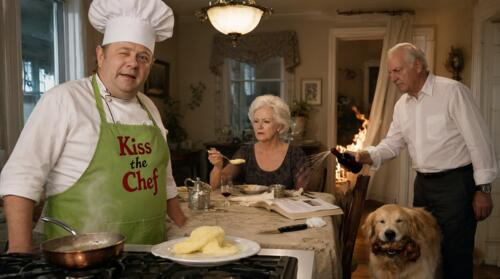

Audio reading slot ready for poetry/poems/gary-pruitt-executive-chef.mp3.
Gary Pruitt, Executive Chef
ACT ONE Gary Pruitt, fifty-two, was sweet but not too bright, And fell for sweet Denise on their first date, that very night. She asked him what he did for work. He choked on his chardonnay And blurted, “I’m a chef!” in the strangled, desperate way Of a man whose finest kitchen feat, in half a century of trying, Was microwaving leftovers and calling it “fine dining.” Six months went by. Denise announced, “My folks are driving through. My mother’s a retired chef. She trained at Cordon Bleu.” Poor Gary smiled and nodded, and his left eye gave a twitch. He said, “I’ll cook the dinner, dear,” and felt his stomach pitch. He bought a toque, a copper pan, a book on carving knives, And an apron, “Kiss the Chef,” to complete his web of lies. ACT TWO Sunday came. The in-laws sat. Stan cracked his knuckles, stern. Dolores raised an eyebrow. “Tell me, Gary, where’d you learn?” “Paris!” Gary lied, then added, “Also Lyon. And Spain.” (He’d never left Ohio, but had watched Ratatouille on a plane.) The soufflé rose in glory, then collapsed with a sigh, Like Gary’s hope, and Gary’s pride, and Gary’s alibi. He lit the shrimp flambé; the flames climbed up the drapes. Stan doused them with the merlot. (Gary mourned the grapes.) Dolores tasted the béarnaise. She set her spoon down slow. “Young man, this tastes like a wet sock that’s been somewhere it shouldn’t go.” Stan said, “Let’s see that knife work, son.” Gary seized a knife, Sliced off a thumb-tip, shrieked, and pleaded, “Spare my life!” The dog then stole the roast whole, and fled with it down the hall, And Gary, bleeding, half in wine, sat down and began to bawl. “I’m no chef!” he sobbed. “I’m a claims adjuster, God help me, it’s true! I lied on our first date, and every date, and now I’m through!” ACT THREE The silence in the room grew thick as Gary’s gravy, Till Stan said, “Son, I lasted nine days as a Marine, then a hernia saved me.” Dolores snorted merlot out her nose and wiped her chin. “My Cordon Bleu was one weekend class at a Holiday Inn.” Denise then took his bandaged hand and said, “You silly man, I knew by date two. Your fridge held mustard, beer, and one sad can. I stayed because you’re kind, and funny, and that apron’s rather hot. It says ‘Kiss the Chef.’ So come here, you fraud, and give it a shot.” They ordered Chinese takeout. They were wed by early spring, And Gary hasn’t cooked since then, not one single thing. The moral? Lie about your height, your hair, your pay, your car, But never claim you’re a chef, my friend. That’s a bridge too far.